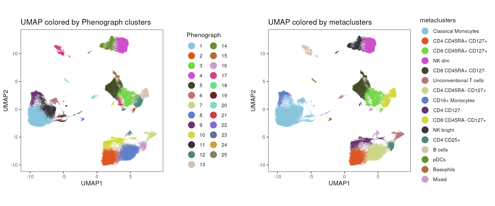
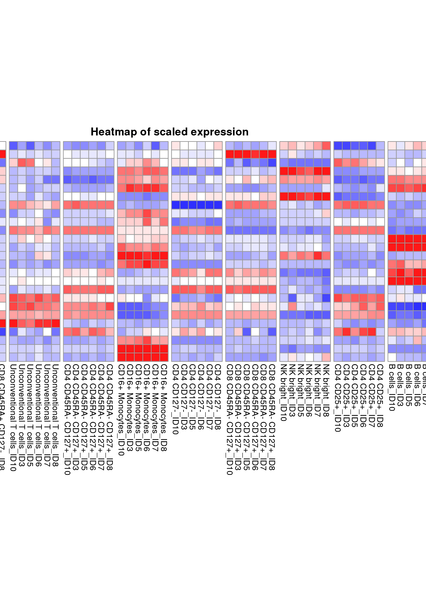

cyCONDOR provides several function to visualize the result of the analysis, following some examples on how to use them.
Load an example dataset
condor <- readRDS("../.test_files/condor_example.rds")Plot the results of dimensionality reduction and clustering
PCA
plot_marker(data = cbind(condor$pca$orig, condor$anno$cell_anno),
param = "group",
order = T,
title = "UMAP colored by group",
dim_red = "PCA",
facet_by_variable = FALSE)
tSNE
plot_marker(data = cbind(condor$tSNE$pca_orig, condor$anno$cell_anno),
param = "group",
order = T,
title = "tSNE colored by group",
dim_red = "tSNE",
facet_by_variable = FALSE)UMAP
plot_marker(data = cbind(condor$umap$pca_orig, condor$anno$cell_anno),
param = "group",
order = T,
title = "UMAP colored by group",
dim_red = "UMAP",
facet_by_variable = FALSE)
Colored by Phenograph, FlowSOM clustering or metaclusters
plot_marker(data = cbind(condor$umap$pca_orig, condor$anno$cell_anno, condor$clustering$Phenograph_pca_orig_k_60),
param = "Phenograph",
order = T,
title = "UMAP colored by Phenograph clusters",
dim_red = "UMAP",
facet_by_variable = FALSE)
plot_marker(data = cbind(condor$umap$pca_orig, condor$anno$cell_anno, condor$clustering$FlowSOM_pca_orig_k_15),
param = "FlowSOM",
order = T,
title = "UMAP colored by FlowSOM clusters",
dim_red = "UMAP",
facet_by_variable = FALSE)
plot_marker(data = cbind(condor$umap$pca_orig, condor$anno$cell_anno, condor$clustering$Phenograph_pca_orig_k_60),
param = "metaclusters",
order = T,
title = "UMAP colored by metaclusters",
dim_red = "UMAP",
facet_by_variable = FALSE)Export the plot as raster image
plot_marker(data = cbind(condor$umap$pca_orig, condor$anno$cell_anno, condor$clustering$Phenograph_pca_orig_k_60),
param = "metaclusters",
order = T,
title = "UMAP colored by metaclusters",
dim_red = "UMAP",
facet_by_variable = FALSE,
raster = TRUE)Split plot by a variable
plot_marker(data = cbind(condor$umap$pca_orig, condor$anno$cell_anno),
param = "group",
order = T,
title = "UMAP colored by group",
dim_red = "UMAP",
facet_by_variable = TRUE)
plot_marker(data = cbind(condor$umap$pca_orig, condor$anno$cell_anno, condor$clustering$Phenograph_pca_orig_k_60),
param = "metaclusters",
order = T,
title = "UMAP colored by metaclusters",
dim_red = "UMAP",
facet_by_variable = "group")Density plot
plot_density(data = cbind(condor$umap$pca_orig, condor$anno$cell_anno),
param = "group",
title = "Figure S2d - Density Map",
dim_red = "UMAP",
dot_size = 0.2,
alpha = 0.2, color_density = c("Greys", "Reds"))## Warning: The dot-dot notation (`..level..`) was deprecated in ggplot2 3.4.0.
## ℹ Please use `after_stat(level)` instead.
## ℹ The deprecated feature was likely used in the cyCONDOR package.
## Please report the issue to the authors.
## This warning is displayed once every 8 hours.
## Call `lifecycle::last_lifecycle_warnings()` to see where this warning was
## generated.
Heatmap of marker expression
HM_markers(input = cbind(condor$expr$orig, condor$clustering$Phenograph_pca_orig_k_60),
group = "metaclusters",
maxvalue = NULL,
title = "Marker expression in metaclusters")
Violinplot of marker expression
violinplot_marker(fcd = condor,
data_slot = "orig",
cluster_method = "Phenograph_pca_orig_k_60",
cluster_type = "metaclusters", marker = "CD56")Classical cytometry dotplot
dotplot_cyto(data = cbind(condor$expr$orig, condor$clustering$Phenograph_pca_orig_k_60),
subset = TRUE,
annotation = condor$clustering$Phenograph_pca_orig_k_60$metaclusters,
subset_char = c("NK bright", "NK dim"),
color_by = condor$clustering$Phenograph_pca_orig_k_60$metacluster,
x = "CD16",
y = "CD56",
title = "NK cells Dotplot")
Densityplot marker
densityplot_marker(data = cbind(condor$expr$orig, condor$clustering$Phenograph_pca_orig_k_60),
marker = "CD3",
split_by = NULL,
color_by = "metaclusters",
title = "CD3 expression")Session Info
info <- sessionInfo()
info## R version 4.3.1 (2023-06-16)
## Platform: x86_64-pc-linux-gnu (64-bit)
## Running under: Ubuntu 22.04.3 LTS
##
## Matrix products: default
## BLAS: /usr/lib/x86_64-linux-gnu/openblas-pthread/libblas.so.3
## LAPACK: /usr/lib/x86_64-linux-gnu/openblas-pthread/libopenblasp-r0.3.20.so; LAPACK version 3.10.0
##
## locale:
## [1] LC_CTYPE=en_US.UTF-8 LC_NUMERIC=C
## [3] LC_TIME=en_US.UTF-8 LC_COLLATE=en_US.UTF-8
## [5] LC_MONETARY=en_US.UTF-8 LC_MESSAGES=en_US.UTF-8
## [7] LC_PAPER=en_US.UTF-8 LC_NAME=C
## [9] LC_ADDRESS=C LC_TELEPHONE=C
## [11] LC_MEASUREMENT=en_US.UTF-8 LC_IDENTIFICATION=C
##
## time zone: Etc/UTC
## tzcode source: system (glibc)
##
## attached base packages:
## [1] stats graphics grDevices utils datasets methods base
##
## other attached packages:
## [1] cyCONDOR_0.1.5
##
## loaded via a namespace (and not attached):
## [1] fs_1.6.3 destiny_3.14.0
## [3] matrixStats_1.1.0 bitops_1.0-7
## [5] devtools_2.4.5 lubridate_1.9.3
## [7] RColorBrewer_1.1-3 doParallel_1.0.17
## [9] ggsci_3.0.0 Rgraphviz_2.44.0
## [11] profvis_0.3.8 tools_4.3.1
## [13] backports_1.4.1 utf8_1.2.4
## [15] R6_2.5.1 urlchecker_1.0.1
## [17] withr_2.5.1 sp_2.1-1
## [19] prettyunits_1.2.0 gridExtra_2.3
## [21] cli_3.6.1 Biobase_2.60.0
## [23] textshaping_0.3.7 Cairo_1.6-1
## [25] ggcyto_1.28.1 isoband_0.2.7
## [27] labeling_0.4.3 sass_0.4.7
## [29] robustbase_0.99-0 readr_2.1.4
## [31] randomForest_4.7-1.1 askpass_1.2.0
## [33] proxy_0.4-27 slingshot_2.8.0
## [35] pkgdown_2.0.7 systemfonts_1.0.5
## [37] foreign_0.8-85 harmony_1.1.0
## [39] parallelly_1.36.0 sessioninfo_1.2.2
## [41] readxl_1.4.3 TTR_0.24.3
## [43] flowCore_2.12.2 rstudioapi_0.15.0
## [45] generics_0.1.3 shape_1.4.6
## [47] car_3.1-2 dplyr_1.1.3
## [49] Matrix_1.6-1.1 RProtoBufLib_2.12.1
## [51] ggbeeswarm_0.7.2 fansi_1.0.5
## [53] S4Vectors_0.38.2 abind_1.4-5
## [55] lifecycle_1.0.3 scatterplot3d_0.3-44
## [57] yaml_2.3.7 carData_3.0-5
## [59] SummarizedExperiment_1.30.2 recipes_1.0.8
## [61] Rtsne_0.16 grid_4.3.1
## [63] promises_1.2.1 crayon_1.5.2
## [65] miniUI_0.1.1.1 lattice_0.22-5
## [67] cowplot_1.1.1 pillar_1.9.0
## [69] knitr_1.44 GenomicRanges_1.52.1
## [71] boot_1.3-28.1 future.apply_1.11.0
## [73] codetools_0.2-19 glue_1.6.2
## [75] pcaMethods_1.92.0 data.table_1.14.8
## [77] remotes_2.4.2.1 vcd_1.4-11
## [79] png_0.1-8 vctrs_0.6.4
## [81] cellranger_1.1.0 gtable_0.3.4
## [83] cachem_1.0.8 gower_1.0.1
## [85] xfun_0.40 princurve_2.1.6
## [87] S4Arrays_1.0.6 mime_0.12
## [89] prodlim_2023.08.28 RcppEigen_0.3.3.9.4
## [91] survival_3.5-7 timeDate_4022.108
## [93] pheatmap_1.0.12 SingleCellExperiment_1.22.0
## [95] iterators_1.0.14 CytoDx_1.20.0
## [97] cytolib_2.12.1 hardhat_1.3.0
## [99] lava_1.7.3 ellipsis_0.3.2
## [101] ipred_0.9-14 ncdfFlow_2.46.0
## [103] nlme_3.1-163 usethis_2.2.2
## [105] xts_0.13.1 GenomeInfoDb_1.36.4
## [107] rprojroot_2.0.3 bslib_0.5.1
## [109] irlba_2.3.5.1 vipor_0.4.5
## [111] Rphenograph_0.99.1 rpart_4.1.21
## [113] colorspace_2.1-0 BiocGenerics_0.46.0
## [115] Hmisc_5.1-1 flowWorkspace_4.12.2
## [117] nnet_7.3-19 ggrastr_1.0.2
## [119] tidyselect_1.2.0 smoother_1.1
## [121] processx_3.8.2 compiler_4.3.1
## [123] curl_5.1.0 glmnet_4.1-8
## [125] graph_1.78.0 htmlTable_2.4.2
## [127] desc_1.4.2 DelayedArray_0.26.7
## [129] checkmate_2.3.0 scales_1.2.1
## [131] DEoptimR_1.1-3 lmtest_0.9-40
## [133] hexbin_1.28.3 RBGL_1.76.0
## [135] callr_3.7.3 stringr_1.5.0
## [137] digest_0.6.33 rmarkdown_2.25
## [139] XVector_0.40.0 htmltools_0.5.6.1
## [141] pkgconfig_2.0.3 base64enc_0.1-3
## [143] umap_0.2.10.0 sparseMatrixStats_1.12.2
## [145] MatrixGenerics_1.12.3 fastmap_1.1.1
## [147] rlang_1.1.1 Rmisc_1.5.1
## [149] htmlwidgets_1.6.2 ggthemes_4.2.4
## [151] shiny_1.7.5.1 DelayedMatrixStats_1.22.6
## [153] farver_2.1.1 jquerylib_0.1.4
## [155] zoo_1.8-12 jsonlite_1.8.7
## [157] ModelMetrics_1.2.2.2 RCurl_1.98-1.13
## [159] magrittr_2.0.3 Formula_1.2-5
## [161] GenomeInfoDbData_1.2.10 munsell_0.5.0
## [163] Rcpp_1.0.11 TrajectoryUtils_1.8.0
## [165] reticulate_1.34.0 stringi_1.7.12
## [167] pROC_1.18.5 zlibbioc_1.46.0
## [169] MASS_7.3-60 plyr_1.8.9
## [171] pkgbuild_1.4.2 ggrepel_0.9.4
## [173] parallel_4.3.1 listenv_0.9.0
## [175] splines_4.3.1 hms_1.1.3
## [177] ps_1.7.5 igraph_1.5.1
## [179] ggpubr_0.6.0 ranger_0.16.0
## [181] ggsignif_0.6.4 RcppHNSW_0.5.0
## [183] reshape2_1.4.4 stats4_4.3.1
## [185] pkgload_1.3.3 XML_3.99-0.15
## [187] evaluate_0.22 rpart.plot_3.1.1
## [189] laeken_0.5.2 tzdb_0.4.0
## [191] foreach_1.5.2 httpuv_1.6.12
## [193] VIM_6.2.2 openssl_2.1.1
## [195] RANN_2.6.1 tidyr_1.3.0
## [197] purrr_1.0.2 future_1.33.0
## [199] ggplot2_3.4.4 broom_1.0.5
## [201] xtable_1.8-4 e1071_1.7-13
## [203] RSpectra_0.16-1 rstatix_0.7.2
## [205] later_1.3.1 class_7.3-22
## [207] ragg_1.2.6 tibble_3.2.1
## [209] beeswarm_0.4.0 memoise_2.0.1
## [211] IRanges_2.34.1 cluster_2.1.4
## [213] ggplot.multistats_1.0.0 timechange_0.2.0
## [215] globals_0.16.2 CytoML_2.12.0
## [217] caret_6.0-94